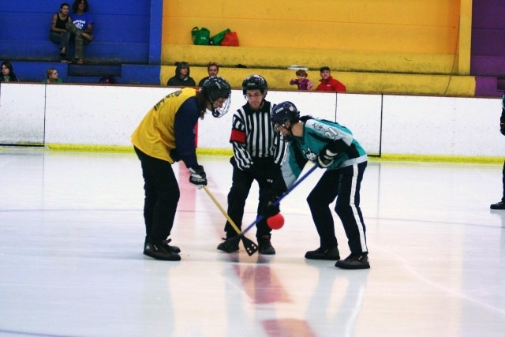

Broomball is a recreational ice game originating in Canada (also contested as being Swedish) and played in certain other countries. It is played in a hockey rink, either indoors or outdoors, depending on climate and location.
A typical broomball ball
In a game of broomball there are two teams, each consisting of six players: a goaltender and five others. The object of the game is to score more goals than the opponent. Goals are scored by hitting the ball into the opponent's net using the broom. Tactics and plays are similar to those used in sports such as ice hockey, roller hockey and floorball.
Players hit a small ball around the ice with a stick called a "broom." The broom may have a wooden or aluminum shaft and has a rubber-molded triangular head similar in shape to that of a regular broom (or, originally, an actual corn broom with the bristles either cut off or covered with tape). Players wear special rubber-soled shoes instead of skates, and the ice is prepared in such a way that it is smooth and dry to improve traction.
